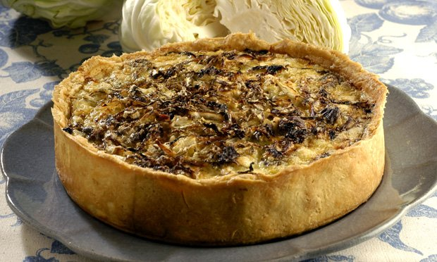
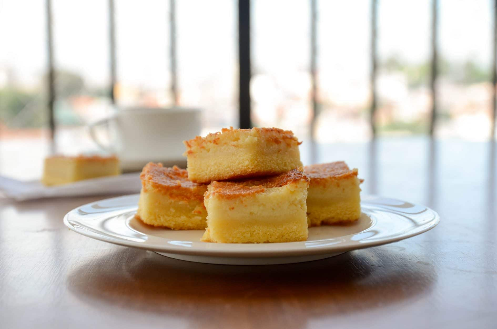

Bolos e Tortas
Bolos e Tortas
Torta de repolho
Ingredientes
- 2 ovos
- 1 xícara de chá de óleo
- 2 xícaras de chá de farinha de trigo
- 1 colher de sopa de fermento em pó
- 3 tomates picados
- 1 xícara de chá de água
- 150 gramas de repolho picado cru
- 1 cebola grande picada
- Sal, pimenta do reino e salsa a gosto.
Modo de preparo
- No liquidificador bata todos os ingredientes.
- Em uma forma untada, despeje a massa e leve ao forno médio (180°C) para assae até dourar.
Bolo de Cenoura

Ingredientes
- 3 cenouras médias raladas
- 1/2 xícara de chá de óleo
- 4 gemas
- 1 xícara de chá de farinha de trigo
- 1/2 xícara de chá de amido de milho
- 1 colher de sopa de fermento em pó
- 3 colheres de sopa de adoçante em pó
- 4 claras em neve
- 150 gramas de chocolate dietético em tablete picado
Modo de preparo
- Bata no liquidificador as cenouras, o óleo e as gemas.
- Acrescente os ingedientes secos e misture bem.
- Junte as claras mexendo delicadamente.
- Coloque numa fôrma pequena untada e enfarinhada.
- Leve ao forno médio preaquecido por cerca de 35 minutos e reserve.
- Amoleça o chocolate em banho-maria e cubra o bolo reservado.
Bolo de Fubá Cremoso
Ingredientes
- 4 ovos
- 4 xícaras de chá de leite
- 3 xícaras de chá de açúcar
- 2 colheres de sopa de margarina
- 1/2 xícara de chá de amido de milho
- 1 xícara de chá de fubá
- 1 colher de sopa de fermento em pó
- 1 xícara de chá de coco ralado
- 1/2 xícara de chá de queijo ralado
Modo de preparo
- Bata no liquidificador todos os ingredientes.
- Coloque numa fôrma retangular pequena untadae enfarinhada.
- Leve ao forno médio preaquecido por cerca de 50 minutos.
- Corte em quadradinhos.